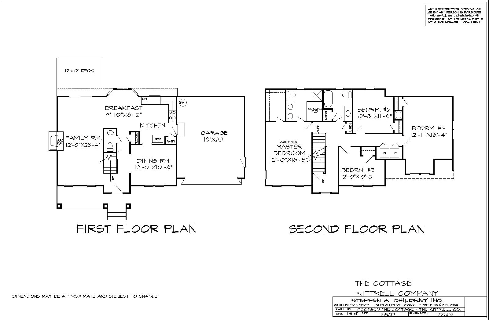
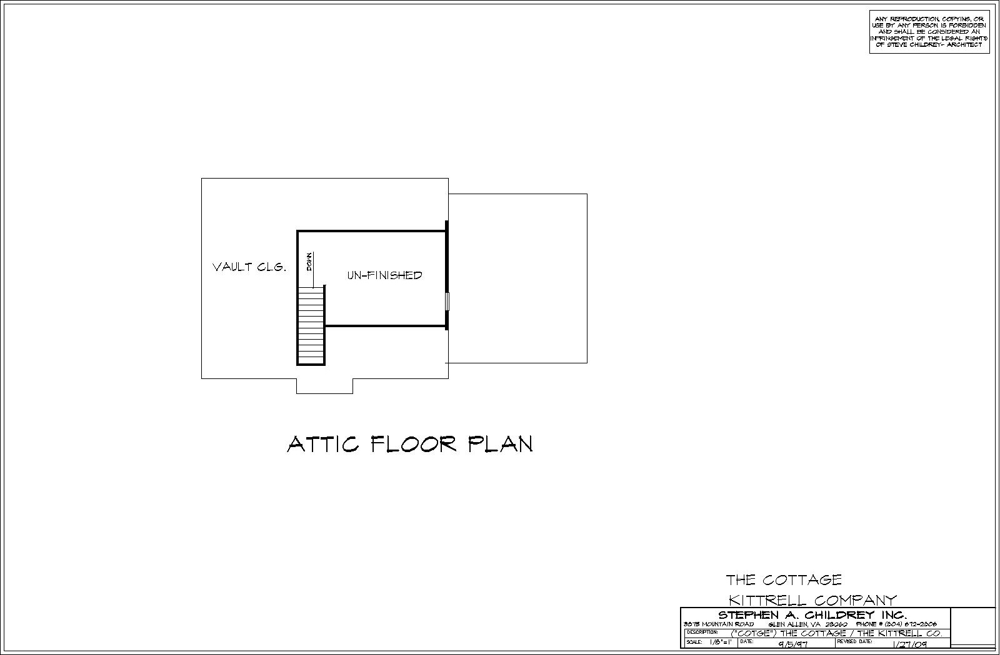

<div class="container project-view">
    
	<div class="row">
        <div class="col-md-8 project-images">
            
            
            
        </div>
        <div class="col-md-4">
            <div class="project-info">
                <h2>Cottage</h2>

                <div class="details">
                    <div class="info-text">
                        <span class="title">Sq. Ft.</span>
                        <span class="val">1,986</span>
                    </div>
                    <div class="info-text">
                        <span class="title">Sq. Ft. (Garage)</span>
                        <span class="val">396</span>
                    </div>
                    <div class="info-text">
                        <span class="title">Sq. Ft. (3rd)</span>
                        <span class="val">240</span>
                    </div>

                    <div class="info-text">
                        <span class="title">View PDF*</span>
                        <span class="val"><a href="pdf/plans/1-Cottage/Cottage-1-2-floor.pdf" target="blank">Floor 1 and 2 (pdf)</a></span>
                    </div>
                    <div class="info-text">
                        <span class="title">View PDF*</span>
                        <span class="val"><a href="pdf/plans/1-Cottage/Cottage-3-floor.pdf" target="blank">Floor 3 (pdf)</a></span>
                    </div>
										
										<span class="disclaimer">* Opens in new window</span> 
                </div>

                <p>The Cottage offers 4 bedrooms with 2 ½ baths, this plan feels much bigger than its square footage.  It come with a walk up 3rd floor that can be used for a finished area or unfinished storage. The versatility of its Craftsman elevation lends itself to be customized to your personal taste </p>
								<p><a href="https://get.adobe.com/reader/" target="adobe"></a></p>
              
                        
                        
            </div>
        </div>
    </div>
</div>
